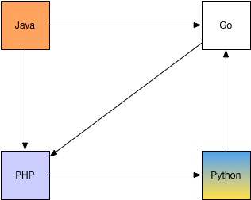

微服务架构的系统是一个分布式系统，按业务领域划分为独立的服务单元，有自动化运维、容错、快速演进的特点，它能够解决传统单体架构系统的痛点，同时也能满足越来越复杂的业务需求。
1 单体架构
说微服务架构之前，不得不说的是单体架构。在软件设计中，经常提及和使用经典的MVC分层模型，但是对业务场景没有划分。一个典型的单体应用就是将所有业务场景的MVC三层都放在了一个工程中，最终经过编译、打包，部署在一个服务器上。单应用架构图如下：
单体应用架构在开发速度、运维难度、服务器成本上都有着明显的优势。在一个产品的前景不明确的初始阶段，使用单体架构是非常明智的选择。
随着业务不断发展，访问量与业务复杂度不断上升，在这个时候单体应用架构就难以胜任了。单体架构应用的不足主要体现在一下3点：
- 业务拓展困难。当业务越来越复杂，单体应用的代码量越来越大，使得对整个应用的代码越来越难维护，新人接受代码所需要的时间成倍增加，业务扩展起来的代价也会越来越大。
- 高并发能力不足。随着用户越来越多，程序承受的并发越来越高，单体应用的高并发能力有限。
- 测试难度增大。代码量非常庞大时，添加新业务可能会牵连更多的代码，甚至会影响其它业务模块，需要测试的点也越来越多，导致测试难度增大。
2 单体应用集群化
随着业务发展，大多数公司会将但应用进行集群部署，并增加负载均衡服务器（例如：Nginx等）。另外，还需要增加集群部署的缓存服务器和文件服务器，并将数据库读写分离，以应对用户量的增加而带来的高并发访问量。
用负载均衡服务器分发高并发的网络请求，用户的访问被分派到不同的应用服务器，应用服务器的负载不再成为瓶颈，用户量增加时，添加应用服务器即可。通过添加缓存服务器来缓解数据库的压力。将数据库读写分离也是一种选择，例如 MySQL 的主从热备，通过相关配置可以将主数据库服务器的数据同步导从数据库服务器，再实现数据库读写分离能够改善数据库的负载能力。当数据库达到瓶颈时，还可以考虑对数据库进行分库分表。架构图如下：
这种架构对高并发有一定的处理能力，也能应对一定复杂的也无需求，改善了系统性能，但是依然没有改变系统单体架构的事实。面对庞大的业务，必然会产生大量的代码，而这大量的代码还是挤在一个工程中，使得代码维护性很差。面对这样的代码，无论是新人学习还是拓展新业务都需要付出更高的成本。
3 微服务架构
为了解决上述问题，微服务架构应运而生，它旨在把业务领域代码划分到多个不同的服务单元，不同服务之间相互调用相互协调，从而形成更庞大的系统。
微服务最初是由 Martin Fowler 在 2014 年写的一篇文章《MicroServices》中提出来的，总结出微服务具有以下特点：
- 按业务划分为一个独立运行的程序。
- 服务之间通过 HTTP 协议互相通信
- 自动化部署
- 可以用不同的编程语言。
- 可以用不同的存储技术。
- 服务集中化管理。
- 微服务是一个分布式系统。
3.1 微服务单元按业务来划分
微服务的“微”到底要定义到什么样的程度，这是一个很难界定的概念，可以根据以下3个方面来尽量界定：
- 代码量
- 开发时间的长短
- 业务的大小
按照业务划分的微服务单元独立部署，运行在独立的进程中。这些微服务单元是高度组件化的模块，并提供了稳定的模块边界，服务与服务之间耦合性非常低，有非常好的拓展性和复用性。
若服务划分不清晰，导致服务之间耦合度太高，容易引起更多的联动故障，升级或测试服务时需要耗费的成本也会更高，这个需要开发者非常严谨地对待服务划分。
3.2 微服务通过 HTTP 来互相通信
微服务单元之间的通信方式一般倾向于使用 HTTP 通信机制，更多时候是使用 Restful API。这种接受请求、处理业务逻辑、返回数据的HTTP模式非常高效，并且这种通信机制与平台和语言无关，这也意味着对微服务集群的技术栈选择有了更多的可能性。
服务与服务之间也可以通过轻量级的消息总线来通信，例如：ActiveMQ、Kafka等。
服务与服务通信的数据格式，一般为 JSON、XML，这两种数据格式与开发语言、平台、通信协议无关。一般来说，JSON比XML轻量，并且可读性更好。

3.3 微服务的数据库独立
微服务的一个特点是按照业务划分服务，服务与服务之间耦合度极低，就连数据库也可以是独立的。不同微服务之间协调是通过接口调用的形式，对数据库没有统一要求，不同微服务可以根据业务领域特性选择最符合业务场景的数据库；还有一个好处是数据库独立，单业务的数据量少，易于维护，数据库性能有着明显的优势，对单个服务的数据库的迁移也更加方便了。
3.4 微服务的自动化部署
微服务架构中，系统被拆分为若干个微服务，每个微服务都是一个独立的应用程序，需要分别部署这些应用。部署成本比单体应用架构要高，使用人工部署的话容易出错而且耗时较长，这里就需要自动化部署机制。
随着技术的发展，尤其是 Docker 容器技术的推进，以及自动化部署工具（例如：Jenkins）的出现，自动化部署变得越来越简单。自动化部署可以提高部署的效率，减少人为的控制，部署过程中出现错误的概率降低，部署过程的每一步都是自动化的，提高软件的质量。虽然构建自动化部署在前期需要耗费更多的人力成本，需要开发人员或运维人员的学习以及开发自动化部署脚本，但当自动化部署机制稳定完之后，二次部署的成本将会大大降低。而面对微服务架构的系统肯定是一个持续集成开发的系统，需要不断地迭代更新，自动化部署将是不二之选。
3.5 服务集中化管理
微服务系统是按业务单元来划分服务的，服务数量越多，管理起来就越复杂，因此微服务必须使用集中化管理，“服务注册中心”这个概念应运而生，例如 SpringCloud 采用 Eureka。
4 微服务架构面临的挑战
微服务架构是分布式架构，分布式系统比单体系统更加复杂，主要体现在服务的独立性和服务相互调用的可靠性，以及分布式事务、全局锁、全局ID、统一认证等，服务边界的划分也是微服务的一大难点，到目前为止没有一个标准，需要通过具体业务场景和团队开发情况来选择。而单体系统不需要考虑这些复杂性，这也使得使用微服务架构的开发者会面临更大的挑战。
4.1 熔断机制
微服务架构的应用之间协调需要通过网络，而网络不好必然会对整个系统带来很大的影响。而微服务架构中，服务之间相互依赖，如果有一个服务出现了故障或是网络延迟，在高并发的情况下，将会导致线程阻塞，在很短时间内该服务的线程资源会消耗殆尽，最终使得服务不可用。不仅如此，由于服务的相互依赖，这种在服务提供方的延迟会波及到服务消费方，而这个服务消费方也可能是另一个服务的提供者，网络延迟的影响会牵连到更多服务，最终可能会导致整个系统瘫痪。这就是“雪崩效应”，也称为“联动故障”。
为了防止“雪崩效应”事件的发生，分布式系统采用了熔断机制。以图为例，当服务C检测到有多次调用服务D的接口都会超时，此时熔断器自动开启，一定时间内从服务C调用服务D的接口都会直接返回错误，而不会通过网络连接调用服务D的接口，这样服务C可以直接把错误返回给上一层并释放掉本线程，从而避免因大量线程阻塞而导致服务器崩掉的状况出现。过了一段时间后，熔断器会自动变为半开启状态，接受部分请求，若发现服务C调用服务D的接口依然超时，则继续开启熔断器；否则，把熔断器关掉，服务C能像往常一样调用服务D的接口。
最后，熔断组件往往会提供一系列的监控，例如：服务可用与否、熔断器是否被打开、目前的吞吐量、网络延迟状态的监控等，从而方便开发人员和运维人员实时了解服务的状况。
4.2 分布式事务
分布式系统有一个著名的 CAP 理论，即同时满足 “一致性”(C)、“可用性”(A)、“分区容错”(P) 是一件不可能的事。而微服务系统通常是一个 AP 系统。在分布式架构中，分布式事务一直都是一个难以解决的问题，业界给出的解决办法通常是两阶段提交。
举个简单的例子，在电商微服务系统中，把商品模块、账户模块划分成两个微服务应用，假设我们在这个商城购买了一部手机，需要从我的账户中扣除1000元，同时手机的库存数量也需要减1。
如果是微服务架构，账户是一个服务，而商品是一个服务，这是不能用数据库自带的事务，因为这两个操作分别在不同应用中执行，他们的数据库会话不同，甚至可能操作的不是同一个数据库，不能简单地使用数据库提供的事务特性完成这个业务需求。这时就需要使用两阶段提交的分布式事务方案，过程如图：
第一阶段，称为“准备阶段”。这个阶段中，所有应用都开启各自的数据库事务，并各自对数据库进行相应的存取操作。待所有存取操作完成后，不提交数据库事务，而是向事务协调器发送“准备完成”的信息，然后等待事务协调器告知所有应用都已经准备好了。
若此时，其中一个应用发生了异常，事务协调器会告知“准备完成”的应用，让它们进行事务回滚操作。否则，待所有应用都“准备完成”后，事务协调器告知所有应用可以开始“第二阶段”。
第二阶段，称为“提交阶段”。当事务协调器告知应用可以进入“第二阶段”时，它们就开始向数据库提交事务。如果在这个阶段应用才发生异常，事务一致性将不能保证，只能在事故发生后，通过日志检查，人工进行该事务的回滚。
而这个事务协调器可以是一个专门处理分布是事务的中间件，也可以简单使用 MQ 来实现，这里不深入探讨。
4.3 服务配置的统一管理
在实际开发过程中，每个服务都有大量的配置文件，而这些配置在不同的环境中也是不一样的。随着服务数量的增加，配置文件的管理也是一件非常复杂的事。
在微服务架构中，需要有统一管理配置文件的组件，如： Spring Cloud Config、阿里的 Diamond、百度的 Disconf 等。这些配置组件所实现的功能大同小异。这里主要介绍统一配置管理的核心功能：
- 需要有一个配置文件仓库存放各个服务的配置文件，可以是本地文件系统、网络文件系统、Git仓库等。
- 分应用分环境读取各自配置。分布式架构中，每个应用启动时，都需要去“配置中心”获取各自应用及对应环境的最新配置文件。
- 配置更新提醒。当配置文件内容被修改时，需要通知正在运行的服务重新拉去最新的配置信息。
4.4 统一认证
传统的单体应用架构中，登录状态只需简单地保持在Session中。但对于微服务架构而言，按照业务领域划分了多个服务，想要把这个登录状态做到全局共享，必须要开发一个”授权中心“。
以下是通过OAuth2标准授权协议设计的一套统一认证解决方案：
图中auth-service充当”授权中心“的功能，用户必须先通过授权中心进行登录认证，若认证成功，授权中心将在浏览器Cookie中设置一个Token，下次浏览器就可以携带Cookie中的Token去访问资源服务器。若资源服务器没法从Cookie中获取到Token或是Token认证失败，将会禁止用户访问资源服务器。
实际上，资源服务器面对同一个Token多次访问时，资源服务器不必每次都调用”授权中心“的接口认证Token，可以在第一次Token认证成功后，把用户信息缓存到资源服务器本地，这样做可以降低”授权中心“的负载，资源服务器减少了远程接口调用的次数，也因此而提高了服务处理的效率。
5. 总结
这篇文章对微服务架构做了一些概括性的介绍，还需要读者深入了解每一个组件的使用以及原理。本文还说明了微服务架构的演化过程，软件工程相比于其它行业而言是一个非常年轻的行业，这个行业从90年代进入中国，到现在才将近30年。因此，这个行业还需要不断发展，技术不断更新或变革，各种行业规范及解决方案层出不穷，有很多尝试最终以失败告终，也不能忽视那些成功的案例都是软件工程师们一次又一次地踩坑然后填坑再总结出来。我们不能因为害怕失败而放弃创新，作为这个时代的软件工程师，只能不断学习、实践与创新，跟着软件工程这个行业前行。
6. 文献参考
- 《深入理解 Spring Cloud 与微服务构建》—— 方志明，2018年3月第1版
- 《微服务设计》—— [英] Sam Newman